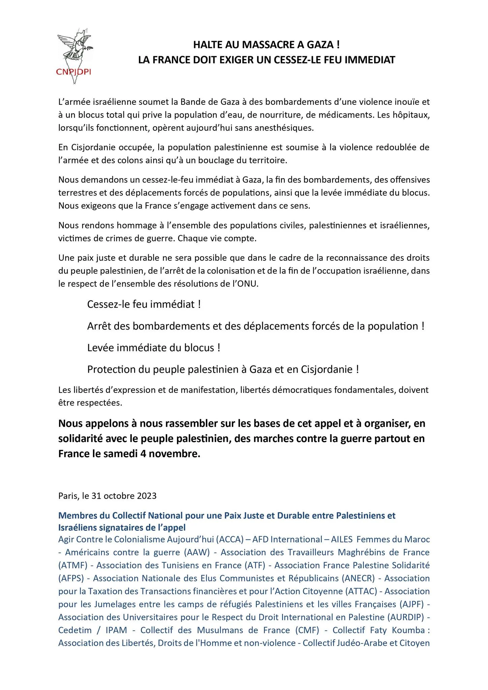
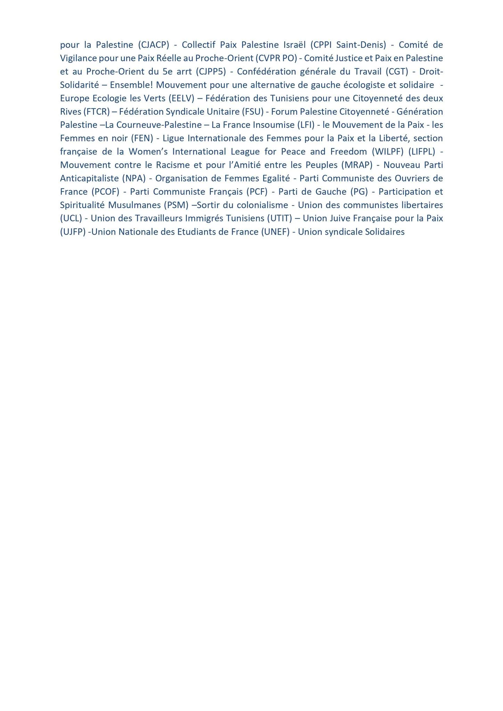
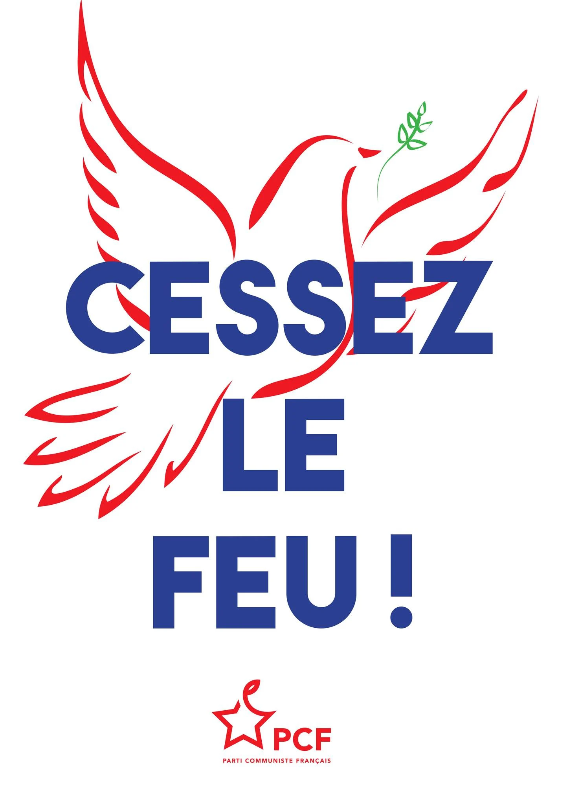

Publication de la fédération
Gaza. Un appel pour l’arrêt des bombardements et le cessez-le-feu
Date indiquée par Facebook · 1 novembre 2023
Repères éditoriaux
Le document partagé le 1er novembre expose l’appel au cessez-le-feu et à une paix juste et durable. Les pages conservées permettent de lire le texte.
Texte conservé avec la publication
Halte au massacre à Gaza !
La France doit exiger un cessez-le-feu immédiat !
Appel des membres du Collectif National pour une Paix Juste et Durable entre Palestiniens et Israéliens
RASSEMBLEMENT SAMEDI 4 NOVEMBRE 2023
10h00, place des Halles à NIORT



Sources
Archive rouge · export Facebook · AR-0002-FB-01551
À lire aussi · À Niort, le rassemblement du 25 octobre pour la paix en vidéo · Le lien d’origine